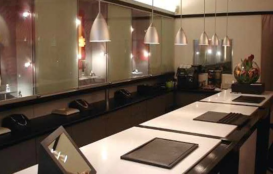

Wenn sich Hände verändern – mehr erfahren
Ihr Juweliergeschäft in Mödling
Schmuckkultur RENATE WEISS Inh. Gabriele Golzar
Hauptstraße 71, 2340 Mödling
Wir präsentieren einen Streifzug durch die vielgestaltige Schmuckkultur, die Ihre außergewöhnliche Persönlichkeit auf die beste Art widerspiegelt.